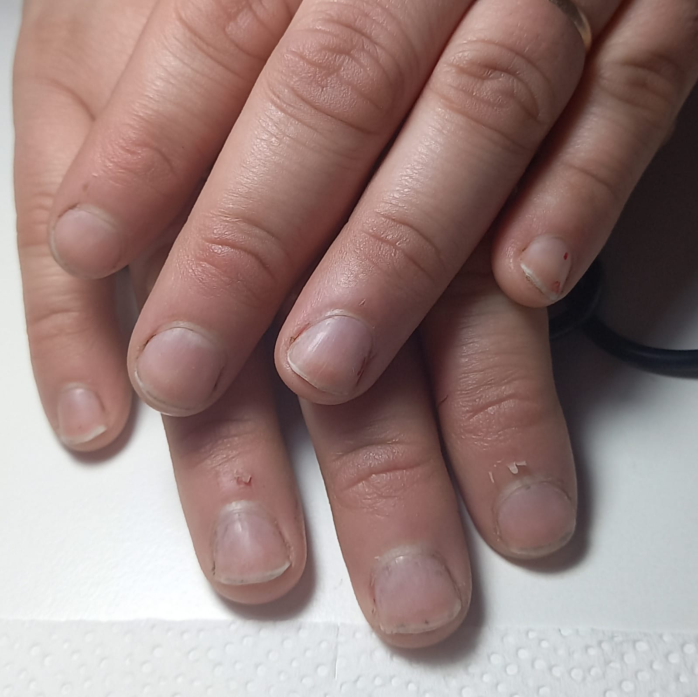
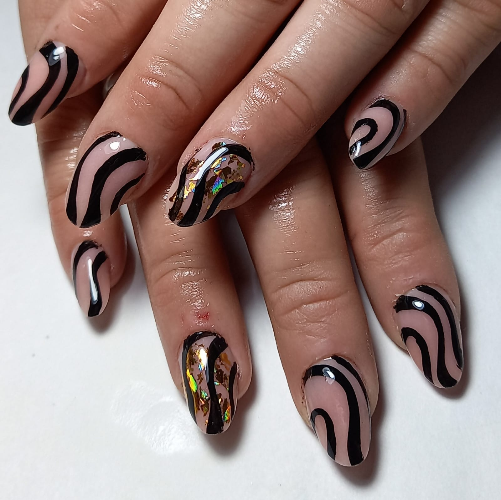
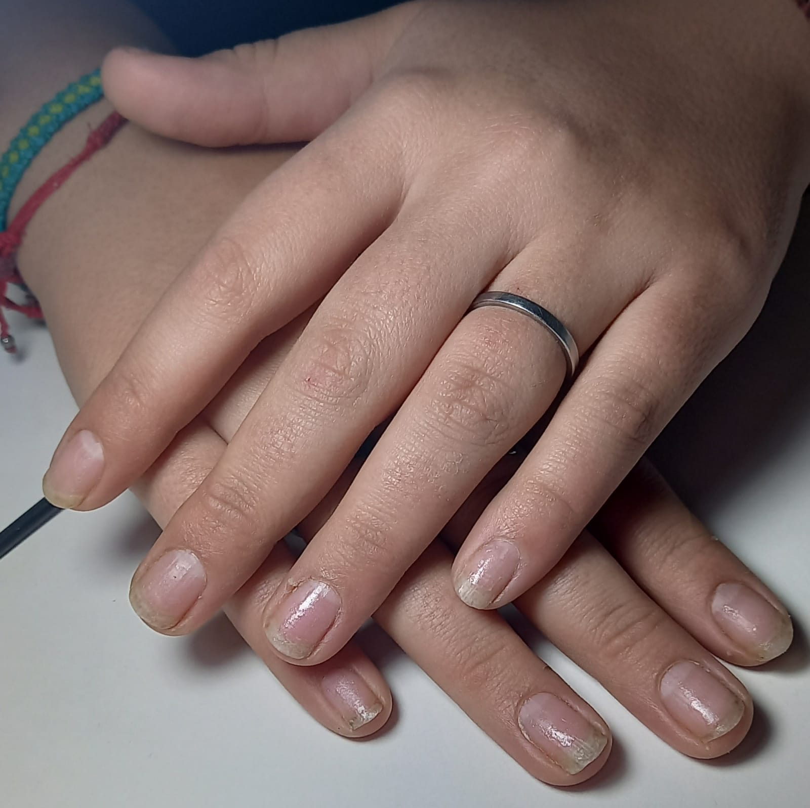

El Kapping consiste en aplicar una fina capa de acrílico o gel fortificador sobre la
uña que actuará como una barrera protectora. A diferencia de las uñas esculpidas, este baño en gel
kapping no alarga la uña natural sino que acompaña el crecimiento de la misma y dura hasta 20 días.


Esculpidas
Las uñas esculpidas son extensiones que se construyen a partir de la uña natural con
material acrílico o gel. Estas permiten restaurar y reconstruir uñas mordidas o simplemente, lucir
uñas más largas. Algo que las hace sumamente atractivas, ya que se puede moldear la forma y longitud
para obtener varios estilos.

Semipermanente
El semipermanente es un esmaltado de secado inmediato y de larga duración
que mantiene un resultado reluciente. Este efecto se consigue con la aplicación de esmaltes
específicos y el secado de las uñas en una luz UV o LED.